프로젝트를 고르면 그 일의 탭만 남습니다
왼쪽 목록에서 프로젝트를 고르면 그 프로젝트에서 열어 둔 대화와 문서가 탭 줄로 돌아옵니다. 프로젝트 하나는 노트 하나이고, 속성과 결정, 열린 질문, 이번 주 기록이 그 노트에 모입니다.
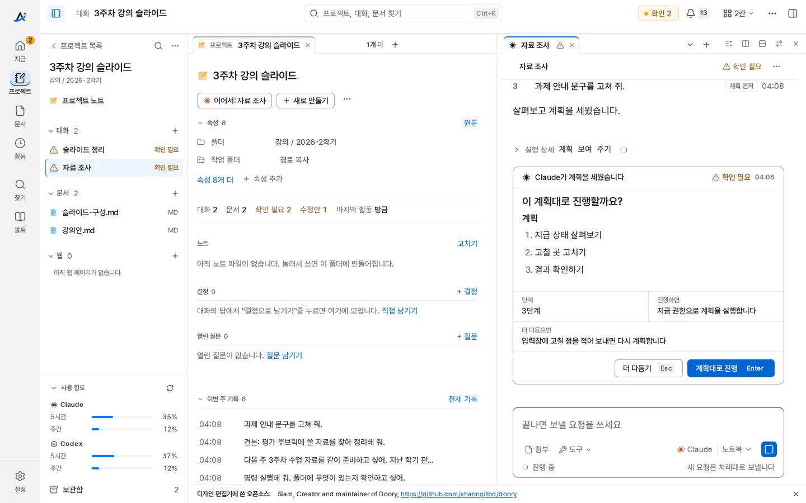
Achmage Workbench는 AI 대화와 한글·워드 문서, 웹 페이지를 프로젝트 하나에 탭으로 모으는 무료 데스크톱 작업실입니다.
0.5.3, 무료, 소스 공개. Windows, macOS, Linux.
먼저 Claude Code나 Codex 가운데 하나가 이 컴퓨터에 설치되어 로그인되어 있어야 합니다.
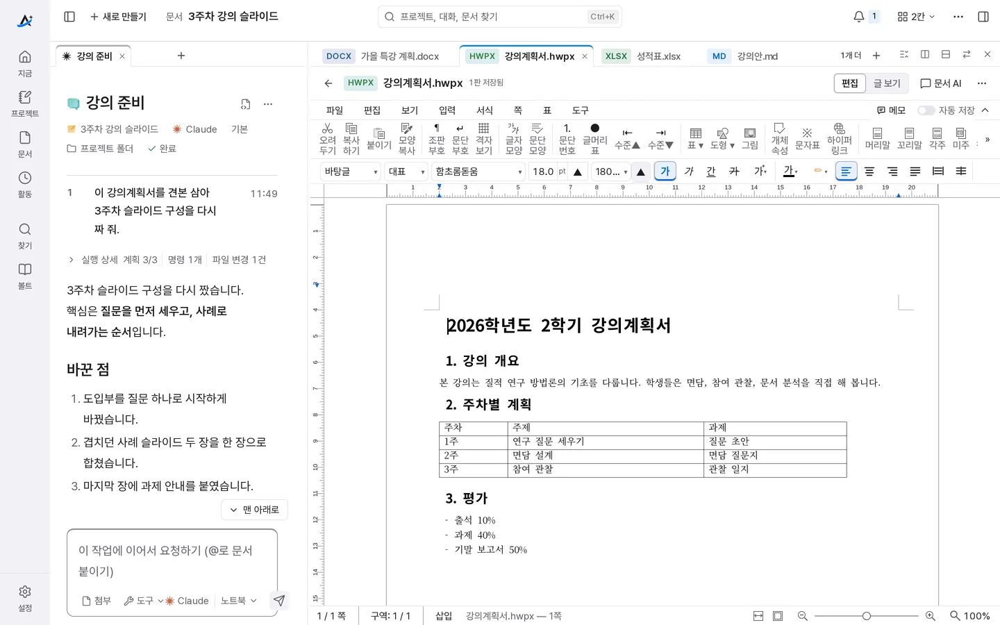
따로 띄우던 워드, 엑셀, 마크다운, 한글 문서는 창 하나의 탭이 되고, AI 대화는 그 문서 옆에 붙습니다.
Workbench의 실제 화면을 견본 자료로 찍은 것입니다. 처음에 떠 있는 창 다섯 개도 같은 앱 화면에서 잘라 낸 조각이고, 각각 창 안의 자기 탭과 AI 대화 칸으로 들어갑니다. AI 대화의 답은 모델 대신 시험용 대역 엔진이 낸 견본 답입니다. 그려 넣은 화면은 없습니다.
따로 열던 것들이 탭이 됩니다. 일 하나를 하려고 창을 여러 개 띄우던 것을, 프로젝트 하나에 모읍니다.
| 하려는 일 | 따로 열던 것 | Workbench에서는 |
|---|---|---|
| AI에게 일 시키기 | AI마다 따로 뜨는 창 | 대화 탭. Claude Code와 Codex를 나란히 씁니다. |
| 보고서와 강의안 고치기 | 워드, PPT, 엑셀, PDF 프로그램 | 문서 탭에서 바로 고칩니다. 마크다운과 디자인 문서도 같은 자리입니다. |
| 한글 문서 다루기 | 한글 | HWP와 HWPX를 내장 편집기에서 엽니다. 중요한 문서는 마지막에 한글에서 인쇄 모양을 확인하세요. |
| 자료 찾아보기 | 브라우저 창과 그 안의 탭들 | 프로젝트에 딸린 웹 탭 |
| 어디 뒀는지 찾기 | 폴더를 하나씩 열어 보기 | 프로젝트 목록과 위쪽 검색 칸. 대화와 문서를 함께 찾습니다. |
| 자리를 비웠을 때 | 돌아올 때까지 기다리기 | 휴대폰의 텔레그램이나 슬랙으로 이 PC의 AI에게 적어 보냅니다. |
같은 창이 여섯 번 바뀝니다. 전부 견본 자료로 찍은 실제 화면입니다.
왼쪽 목록에서 프로젝트를 고르면 그 프로젝트에서 열어 둔 대화와 문서가 탭 줄로 돌아옵니다. 프로젝트 하나는 노트 하나이고, 속성과 결정, 열린 질문, 이번 주 기록이 그 노트에 모입니다.

‘학과 회의록 정리’를 고르면 목록과 탭이 그 프로젝트의 것으로 바뀝니다. 보이지 않는 프로젝트의 AI 작업은 그동안에도 계속됩니다.
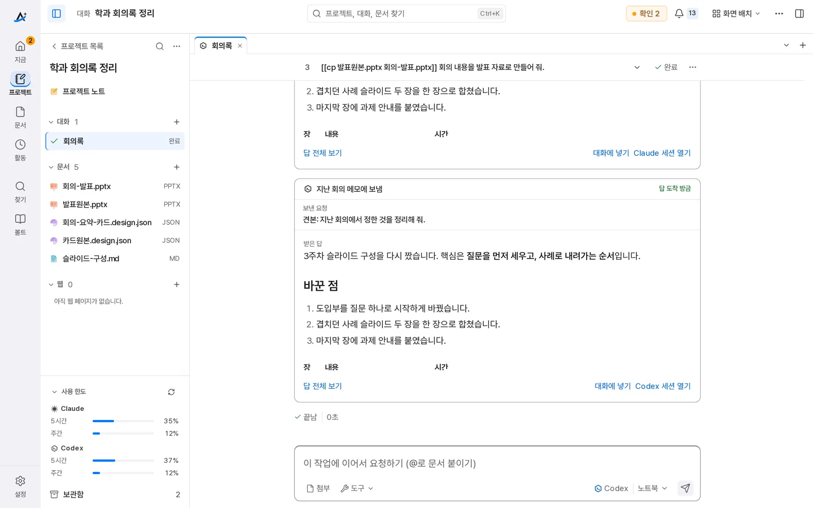
AI가 문서를 고쳐도 바로 덮어쓰지 않습니다. 몇 줄이 달라졌는지 먼저 보이고, 비교한 뒤 적용하거나 취소합니다. 명령을 실행하기 전에도 먼저 묻습니다.
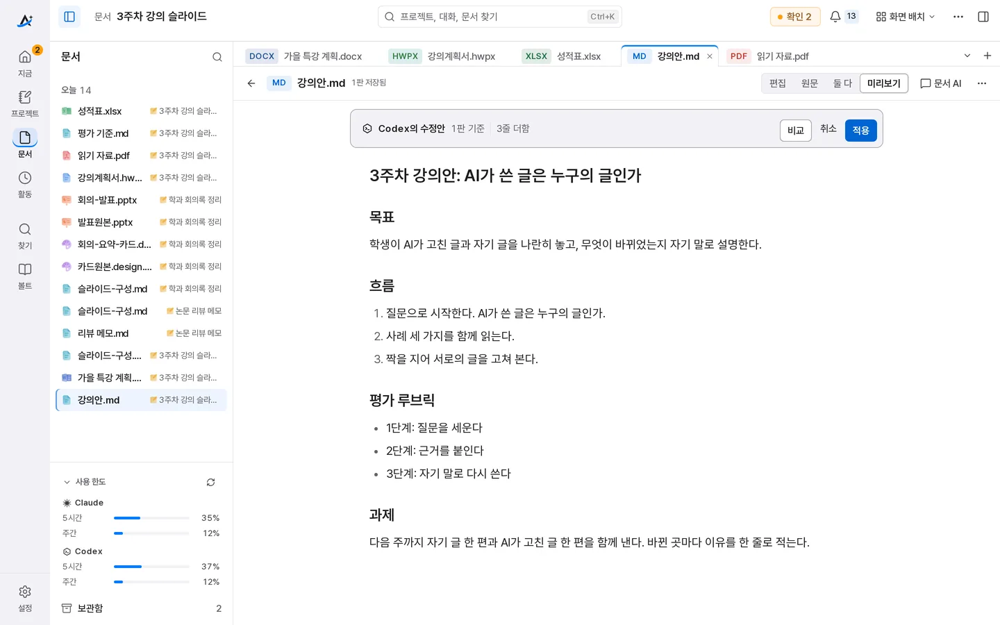
워드 문서를 열면 편집기 옆에 ‘이 문서의 AI’가 붙습니다. 여기에 적은 요청은 그 문서만 맡는 별도 대화가 되고, 원래 대화에는 진행 상황과 결과만 알려 줍니다.
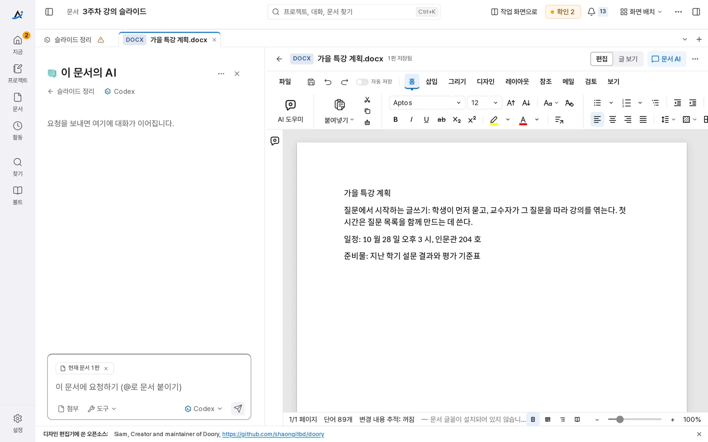
HWP와 HWPX를 Workbench 안에서 열고 고칩니다. 공개된 한글 문서 엔진(rhwp)으로 그리고, 줄 나눔과 쪽 수가 한글 인쇄본에 가까워지도록 맞췄습니다. 중요한 문서는 마지막에 한글에서 한 번 열어 인쇄 모양을 확인하세요.
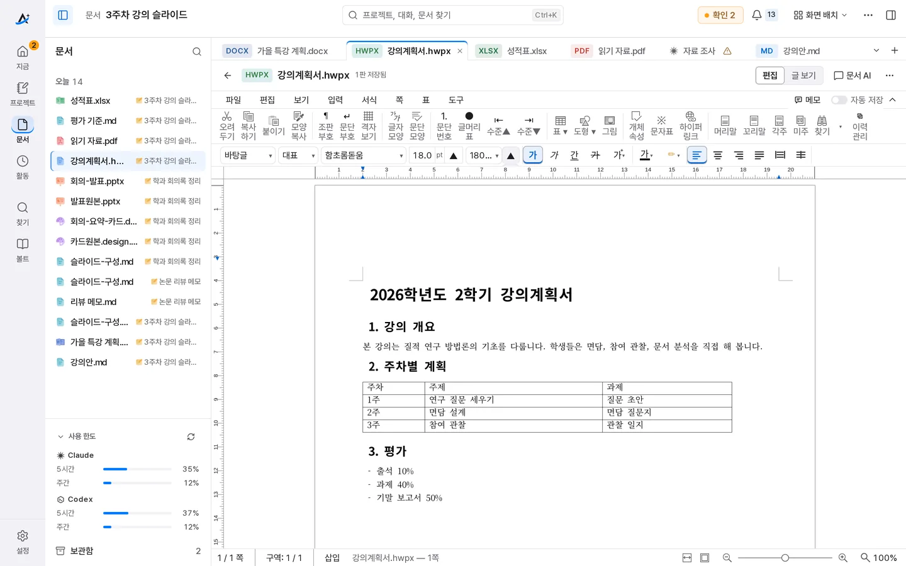
Claude Code와 Codex를 한 창에서 씁니다. 이 컴퓨터에 설치해 로그인해 둔 것을 그대로 쓰므로 쓰던 구독으로 연결되고, 쓴 만큼 따로 돈을 내는 개발자용 열쇠(API 키)는 받지 않습니다. 남은 사용량도 함께 나옵니다.
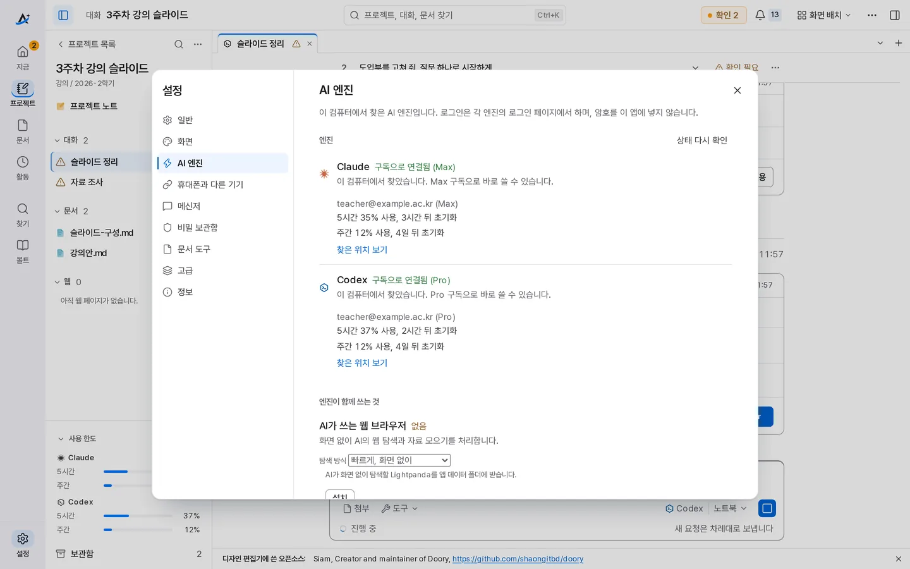
밝을 때 쓸 색과 어두울 때 쓸 색을 하나씩 고릅니다. 눌러 보면 같은 화면이 그 색으로 바뀝니다.
밝은 색
어두운 색
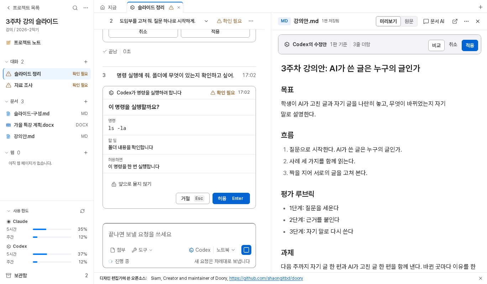
화면에 보이지 않은 지 10분이 지난 탭은 메모리에서 내려 두었다가, 다시 누르면 다시 엽니다. 탭은 탭 줄에 그대로 있습니다.
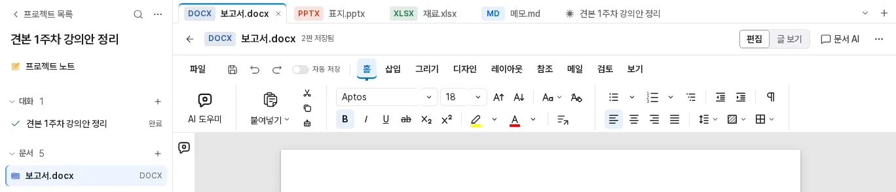
1.3 GB
브라우저(헤드리스 Chromium)에서 앱을 띄우고, 쉬기까지의 시간을 12초로 줄여 세 번 잰 것 가운데 마지막 회입니다. 세 번의 범위는 깨어 있을 때 1,201–1,339 MB, 쉰 뒤 492–744 MB입니다. 설치한 앱은 다른 엔진(WebKitGTK)으로 그리므로 크기는 참고값이고, 줄어드는 방향은 같습니다. 다른 앱과 견준 값은 없습니다.
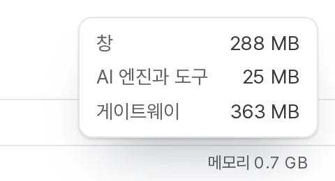
Chrome, Edge, Firefox의 즐겨찾기를 가져오면, 모든 프로젝트의 웹 탭에서 주소 줄 바로 아래에 한 줄로 나옵니다.
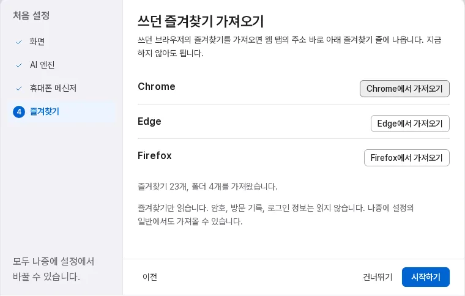
자리를 비워도 일은 이 PC에서 계속됩니다. 휴대폰의 텔레그램이나 슬랙에 적어 보내면 Workbench의 AI가 받아서 하고, 그 대화는 PC에서 자기 자리에 모입니다.
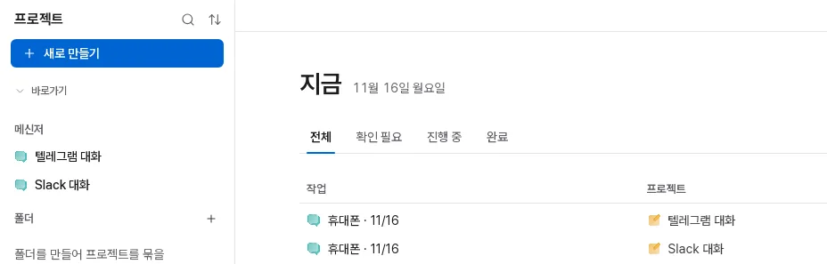
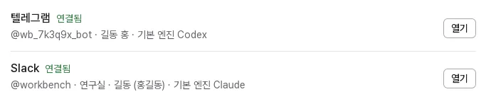
휴대폰의 텔레그램
어제 받은 학생 명단 정리해 줘
01:42
받았습니다. PC의 ‘텔레그램 대화’에서 이어서 합니다.
휴대폰 화면 대신 글로 옮겼습니다. 요청 글은 PC에 남은 견본 기록 그대로이고, 답 글은 그 과정을 말로 풀어 적은 것입니다.
GitHub 릴리스에서 운영체제에 맞는 설치 파일 하나를 받습니다. 무료입니다. 아래 이름은 2026년 11월 17일에 나온 0.5.3의 파일입니다.
먼저 필요한 것 Claude Code나 Codex 가운데 쓰려는 것이 이 컴퓨터에 설치되어 로그인되어 있어야 합니다. Claude Code는 Anthropic의, Codex는 OpenAI의 AI 작업 도구입니다. Workbench는 그 로그인을 그대로 쓰고 API 키를 따로 받지 않습니다.
설치 파일은 컴퓨터용입니다. 휴대폰으로 보고 있다면 이 페이지를 컴퓨터에서 열어 받으세요.
Achmage.Workbench_0.5.3_x64-setup.exe129 MBAchmage.Workbench_0.5.3_x64_ko-KR.msi188 MBAchmage.Workbench_0.5.3_aarch64.dmg167 MBAchmage.Workbench_0.5.3_amd64.AppImage232 MBAchmage.Workbench_0.5.3_amd64.deb174 MBachmage-workbench-0.5.3-1-x86_64.pkg.tar.zst114 MBsudo pacman -U achmage-workbench-*.pkg.tar.zst
시스템의 Node.js 24 이상을 씁니다.